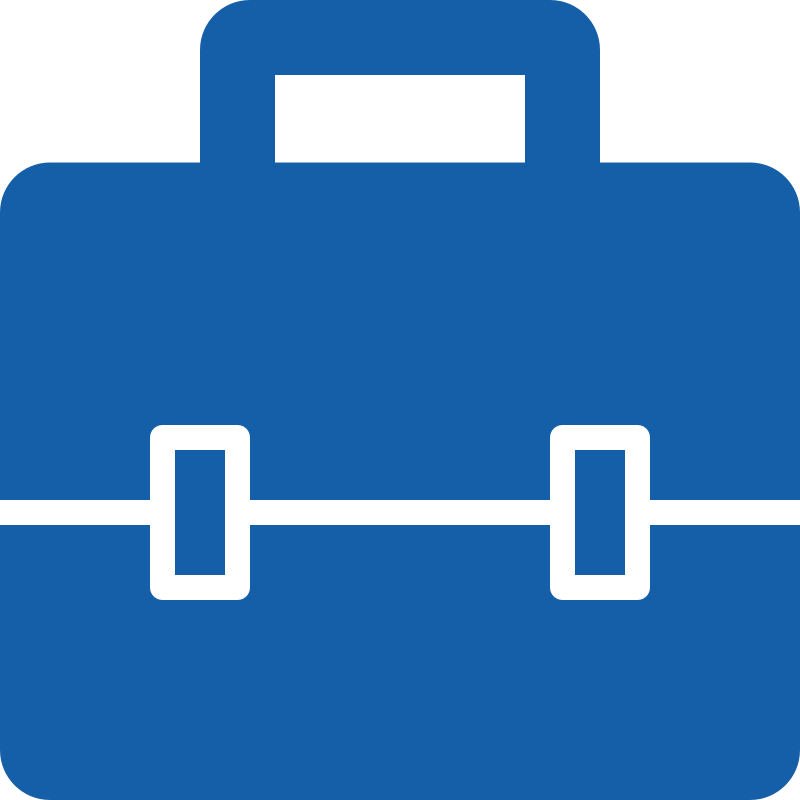
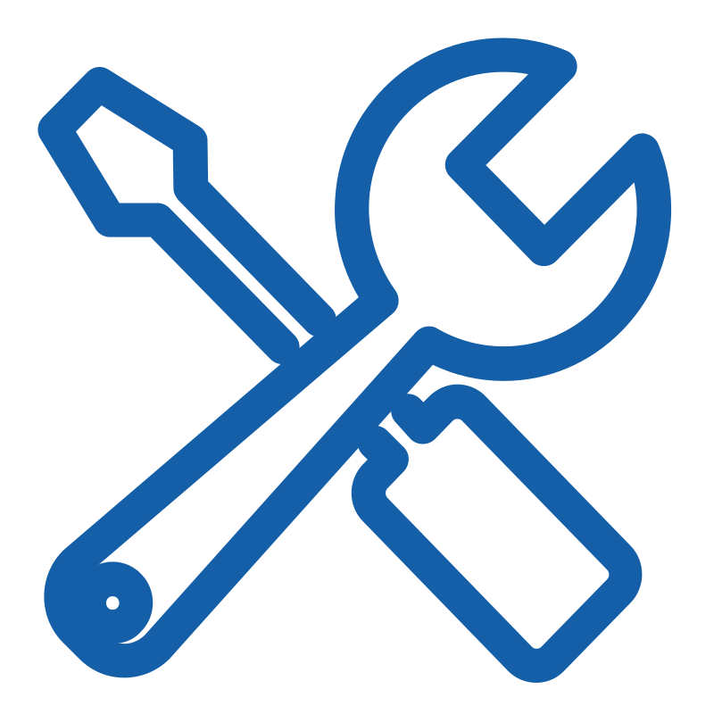

 Work Experience
I came to Netherlands for this job. I really love the culture at Storyteq. Also the professional people I got the chance to be working with in here. Additionally the product itself, Storyteq, is so interesting and challenging that I really feel I'm doing something important. This is a large-scale project with lots of important customers (Heineken, KFC, McDonald's, BMW to name a few). In which we, as a team, try our best to make it
Tech Stack: Vue, HTML5 Canvas, Vuex & Pinia, Nuxt, Vite, Vitest, Vuex, Jest, Selenium, Cypress, Keycloak, TypeScript, Element UI, CSS, HTML, JavaScript
Tools: VSCode, Git, Sentry, Segment
Concept/Business Domain: Advertising, Marketing, How Engines Work (Template Eng), AI, DialogFlow
This role was my first international job experience and the largest company size I've ever worked with. New things I learned here are large-scale project management and maintaining design/UI/UX stable across multiple products. And the challenge and strictness of the product's multilingualism here were far more serious than the internationalization experiences I had before. Additionally using English as the primary language in the office significantly improved my language skills. Plus, working on w Website Builder was one of the most interesting experiences in my career.
Tech Stack: React, TypeScript, Ant Design, CSS, HTML, JavaScript
Tools: VSCode, Git, Lerna, Transifex, Intercom, Sentry, Segment
Concept/Business Domain: Website Builder, How Engines Work (Game Engine, Website Engine, etc...), Test-Driven Development/Design, AI, DialogFlow, Mono Repos
My role here was Full Stack Web-Application development, Front-end weighted. The main benefit of working at Faraz Pajohan was working with expert people and experiencing well-structured team management and project planning. This was my first time bootstrapping and completing a professional-grade Web-Application from the ground up. I constantly applied best practices alongside developing features as the whole team always encouraged agains technical debts. New things I enjoyed learning and getting done here are extreme use of WebSockets for real-time data, designing customizable dashboards, running and managing child processes from NodeJS, and running filterable, searchable, sortable, pageable SQL queries, and practicing Test Driven Development for frontend. As the rest of the team were building a customized OS forked from Debian, I was responsible for installing and running the web application on it. So I got to config the NGINX, install InfluxDB, and run the NodeJS app and also serve the frontend SPA.
Tech Stack: React, TypeScript, ExtJS, Material-UI, NodeJS, Socket.IO, React-GridLayout, DBUS, InfluxDB, SQL, Jest, JSDOM
Tools: VSCode, Git, Debian, Ubuntu, NGINX
Concept/Business Domain: A little of Networking & Network-Security, Customized OS
- One rloe was at a large company specialized in stock trading and investment platforms. I worked on a product for future exchanges. The reason I left was I did not see any opportunities for growth there.
- The other one was a small company working on a management app with document sharing features, calendar, to-do list, and more. It was built for 3 platforms: Web, Android and Windows separately. I was working on the Web. Despite the previous one I was surrounded by really genius people here, and I learned a lot even in those short ~1.5 months. The problem though was the excessive working culture there. Working for 12 hours is OK if it happens from time to time, but do it everyday and it starts harming your life.
I began my professional full-time career here in Hasin as a Frontend developer. I had the opportunity of working on a very challenging and complex product, called UbiProcess/Bizotop, alongside a very knowledgable team. Our same web-app codebase was ported to Android & iOS using Cordova. I learned material design basics here for the first time.
Tech Stack: AngularJS, Angular, TypeScript, Cordova, Angular-Material, JointJs, Sass,
Tools: WebStorm, Git, XCode, Material Design System, JIRA
Concept/Business Domain: BPMS & BPMN, Website & App Engine/Generation, Form Generator/Builder, Hybrid Web Apps
 Freelancer
6 Months
-
Hamedan . Iran
Freelancer
6 Months
-
Hamedan . Iran
Freelanced on a variety web-related projects, as well as a
C++/CUDA project.
Most notable one was developing a full-featured frontend for a
hotel in Hamedan, including reservation, admin panel, payment, and
more.
And another one was a network packet classifier using C++ and
CUDA. It was an experimental project to find out if using GPUs in
internet routers with CUDA could help us with classifying internet
packets in real-time.
Tech Stack: C++, CUDA, SFML, JavaScript, HTLM, CSS, Dom, AngularJS
Tools: Visual Studio
Concept/Business Domain: Packet Classification for Routers, Aggregated Bit Vectors Algorithm, Game Development, CRUD/RESTful APIs
Worked on various projects, mostly with WordPress and OpenCart. My
responsibilites were fixing PHP and JavaScript issues and some
HTML/CSS tweaks. We created various online shops and a handful of
websites for local businesses in Hamedan with eye-catching landing
pages.
My most satisfying experience was on a headphone shop. They asked
for a 3D preview of headphones, which we could not deliver, but
instead, we brought every headphone in, one by one, took 30-40
pictures of each, and created a 360° preview on the website. I
used a JQuery plugin to accopmlish this.
Tech Stack: PHP, JavaScript, HTML, CSS, JQuery
Tools: WordPress, OpenCart, Notepad++
Concept/Business Domain: Online Shops, Beautiful Landing Pages, Payment Gateways
 Tools & Skills
git reflog.
React Native
Most basic knowledge! Just have bootstrapped two projects with it
and abandoned them. Just enough to know the basic concepts of how it
works.
TypeScript
I am comfortable with it. Never got really deep with it. But never
was also left hanging with it. I can get good use of utility types,
type guards and template types where necessary.
Node.js
Fired up a few web backend projects with it, including one for
production at Faraz Pajohan. Used Express, MySQL, MongoDB, InfluxDB,
and Socket.IO with it.
Express
Not too advanced. Not too basic. Enough to launch a full RESTful API
with it with enough complexity and still keep it clean!
MongoDB
Most basic knowledge. Always loved it because it was easy 👀
HTML
YES!
CSS
I always accomplished what I wanted with it without knowing how!
Happens rarely recently. (I mean the "without knowing how" part)
C++
I've built a very basic 2D move and shoot game with SFML, wrote a
network packet classifier with CUDA and modified a CGI web service
written in C here and there.
CUDA
I know the concepts behind it, why and how this whole computing on
GPU is cool and implemented a network packet classifier with CUDA.
Other Stuff
- I had quite experiences in transforming legacy code to new code. I migrated different projects from AngualarJS/JavaScript -> Angular/TypeScript, ExtJS -> React/MaterialUI -> TypeScript, Vue.js 2 -> Vue.js 3. So I can say I can find my way in legacy code, deep dive in, and come out with a better code.
- I know my way in Audio: producing music, mixing and mastering and have worked with different professional DAWs: Ardour, Pro Tools, Cubase, FL Studio, Ableton, GoldWave, Adobe Audition and Audacity
- Education: I finished high school and then got accepted in Bu-Ali Sina University (Hamedan). But after 4 semesters I got expelled for bad grades 👀. But it turned out all good. I'm happy with my life. 😎
- I wrote a blog post called "Merge Request Mastery" which is about creating good merge requests. Including some tips and tricks I use myself to create "reviewable" MRs: Merge Reuqest Mastery